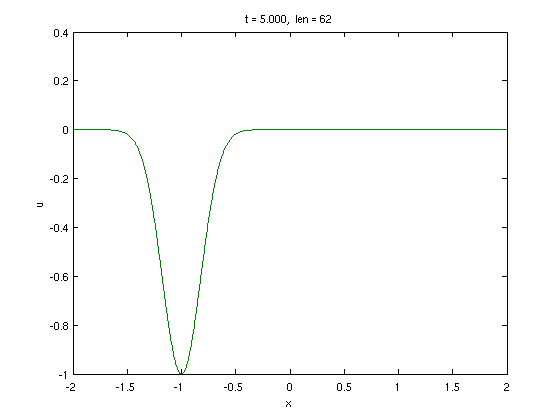
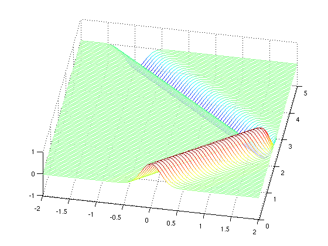
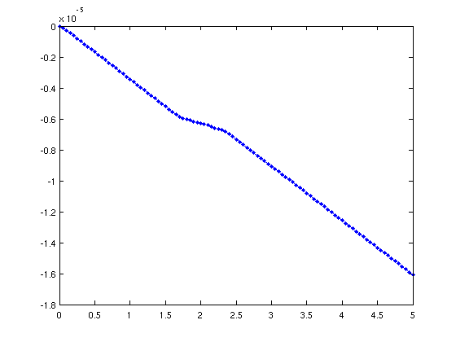
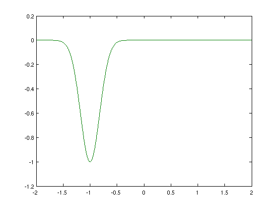
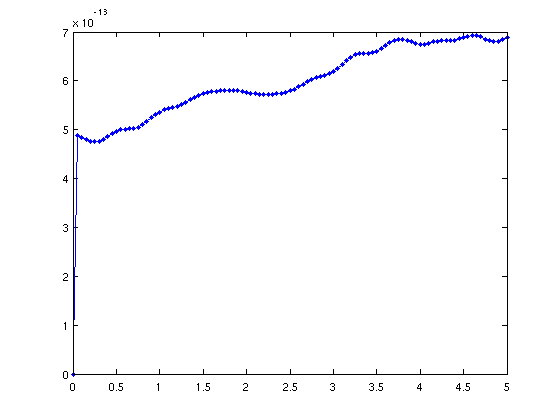

Maxwell's equations
Toby Driscoll, November 10, 2010
(Chebfun example pde/Maxwell.m)
In one dimension in a simple medium, Maxwell's equations can be written as
E_t = c^2 B_x, B_t = E_x
where E is the z-component of the electric field, B is the y-component of the magnetic field, and c is the speed of light in the medium. A typical boundary condition is to set E=0, which implies a perfect conductor.
Here is how we can pose Maxwell's equations for solving in PDE15S, in a medium with c=1.
pdefun = @(E,B,diff) [ diff(B), diff(E) ]; bc.left = @(E,B,diff) E; bc.right = bc.left;
Note how the spatial differentiation operator has to be accepted as an input argument in each case. Now we can define an initial condition and solve the problem.
d = [-2,2]; x = chebfun('x',d); E0 = exp(-16*x.^2); t = 0:0.05:5; soln = pde15s(pdefun,t,[E0,-E0],bc,pdeset('plot','on'));
The result is a cell array: soln{1} is a quasimatrix with each column representing E at a requested time, and soln{2} is the same for B. A space-time plot shows an inverted reflection of E off of the right boundary:
[E,B] = deal(soln{:});
waterfall(E,t,'simple')
view(10,72)
 In theory, energy is conserved. We can use this principle to check the accuracy of the numerical solution.
energy = sum( E.^2 + B.^2, 1 ); % integrate E^2 + B^2 in space plot(t,energy-energy(1),'.-')
Clearly, a little dissipation is introduced by the time integration. The amount is compatible with the default tolerance of 1e-6 in PDE15S.
Because the problem is a linear evolution u_t = Au, where u=[E,B], we can use an operator exponential as an alternative for the time evolution. The block operator A is defined as
A = chebop(d); A.op = @(x,E,B) [ diff(B), diff(E) ]; A.lbc = @(E,B) E; A.rbc = @(E,B) E;
Now we use expm to solve the linear evolution. We'll save time if we just apply one exponentiation repeatedly.
Phi = expm( (t(2)-t(1))*A ); u = [E0,-E0]; for n = 2:length(t), u=Phi*u; E(:,n) = u(:,1); B(:,n) = u(:,2); plot(u), drawnow, pause(eps), end
For linear propagation, expm is far more accurate than pde15s, as a check of energy conservation confirms.
energy = sum( E.^2 + B.^2, 1 ); % integrate E^2 + B^2 in space plot(t,energy-energy(1),'.-')